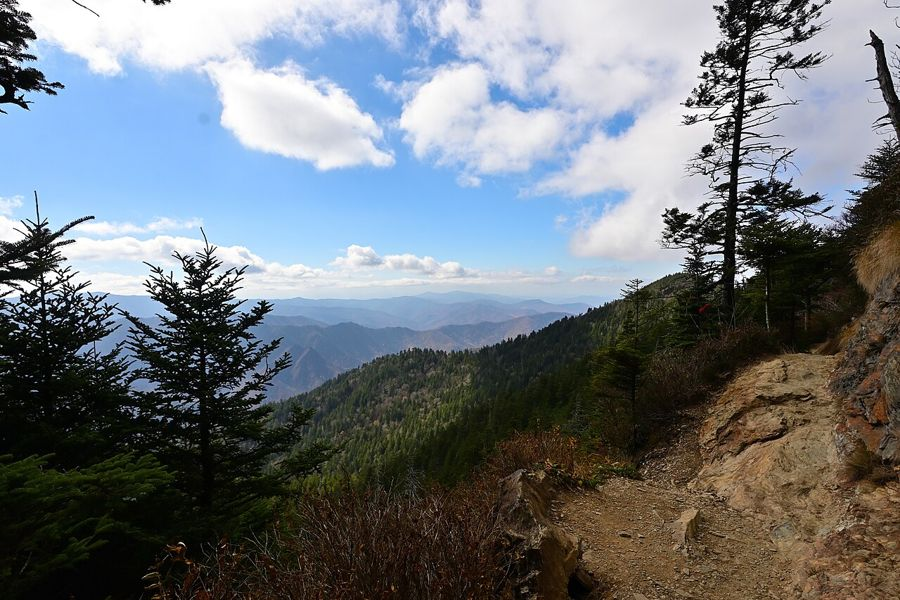
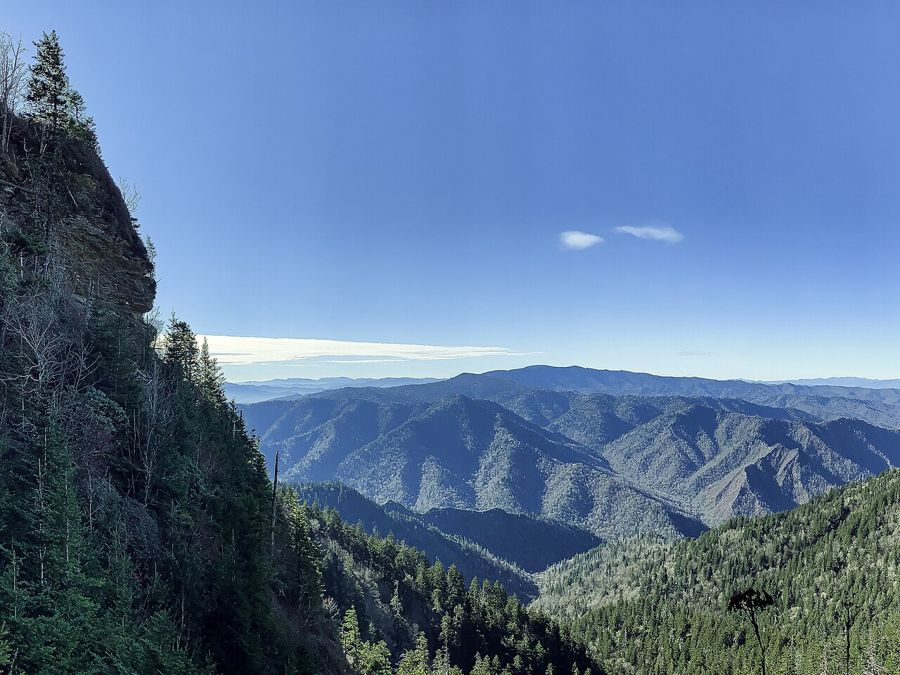
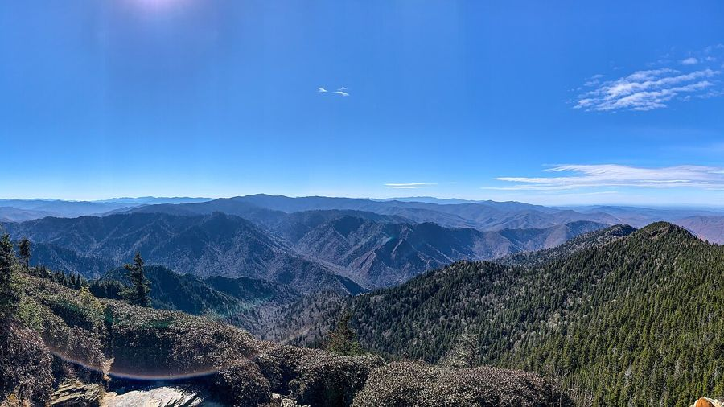

The route starts on Newfound Gap Road in Great Smoky Mountains National Park. The photo shows the trail higher up.
Photo: Andrew Heneen · CC BY 4.0 · Wikimedia Commons

Higher on the trail, breaks in the spruce-fir forest open views across the ridges.
Photo: AppalachianCentrist · CC BY-SA 4.0 · Wikimedia Commons

You have reached LeConte Lodge. Cliff Tops, a short walk away, looks out over the Smokies.
Photo: AppalachianCentrist · CC BY-SA 4.0 · Wikimedia Commons